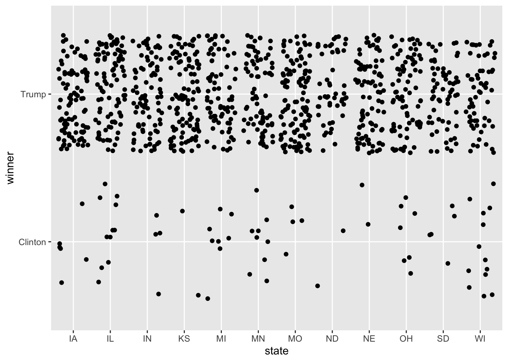

library(tidyverse)
publishers <- read_csv("https://www.dropbox.com/s/e1r06gbvxobrsfm/publishers_places.csv?dl=1")
publishers_filtered <- publishers |>
group_by(city) |>
filter(n() > 5) |>
drop_na()7 Visualizations with ggplot2
“The purpose of visualization is insight, not pictures.” – Ben A. Shneiderman
In R, the dominant package for visualizing data is ggplot2 which belongs to the tidyverse.
7.1 The “layered grammar of graphics”
ggplot2 works with tibbles and the data needs to be in a tidy format. It builds graphics using “the layered grammar of graphics.” (Wickham 2010)
This implies that you start with a base layer – the initial ggplot2 call.
publishers_filtered |>
ggplot()
The initial call produces an empty coordinate system. It can be filled with additional layers.
ggplot(data = publishers_filtered) +
geom_bar(aes(x = city)) Unlike the remainder of the tidyverse, ggplot2 uses a + instead of the pipe |>. If you use the pipe by accident, it will not work and an (informative) error message will appear.
# ggplot(data = publishers_filtered) |>
# geom_bar(aes(x = city)) 7.1.1 The layers
In general, a call looks like this:
ggplot(data = <DATA>) +
<GEOM_FUNCTION>(mapping = aes(<MAPPINGS>))As you might have seen above, I provided the data in the initial ggplot call. Then, when I added the layer – the geom_bar() for a bar plot – I had to provide the mapping – which variables I wanted to plot – using aes(). This is referred to as the aesthetics. In my case, I wanted the cities to be projected to the x-axis. Since I was using geom_bar to create a bar plot, the number of occurrences of the respective cities were automatically counted and depicted on the y-axis. There are more geom_* functions and they all create different plots. Whether you can use them or not depends on the data you have at hand and/or the number of variables you want to plot. In the following, I will give you a brief overview of the most important geoms.
7.1.1.1 One variable
If you only want to display one variable, the x- or y-axis, as you choose, will depict the variable’s value. The counterpart will display the frequency or density of those values.
7.1.1.1.1 One variable – discrete
Here, the only possible kind of visualization is a bar plot as shown above. If the visualization should look more fancy, e.g., with colored bars, you have several arguments at hand. If they should not be different for different kinds of data, they need to be specified outside the aes(). There are always different arguments and you can look them up using ?<GEOM_FUNCTION> and then looking at the Aesthetics section. Apart from that, you can also look at the ggplot2 cheatsheet.
ggplot(data = publishers_filtered) +
geom_bar(aes(x = city), fill = "blue") 7.1.1.1.2 One variable – continuous
If you want to display a continuous variable’s distribution of values, you can use a histogram. Its geom_* function is geom_histogram():
billboard <- read_csv("https://www.dropbox.com/s/e5gbrpa1fsrtvj5/billboard.csv?dl=1")Rows: 317 Columns: 79
── Column specification ────────────────────────────────────────────────────────
Delimiter: ","
chr (2): artist, track
dbl (65): wk1, wk2, wk3, wk4, wk5, wk6, wk7, wk8, wk9, wk10, wk11, wk12, wk...
lgl (11): wk66, wk67, wk68, wk69, wk70, wk71, wk72, wk73, wk74, wk75, wk76
date (1): date.entered
ℹ Use `spec()` to retrieve the full column specification for this data.
ℹ Specify the column types or set `show_col_types = FALSE` to quiet this message.song_tbl <- billboard |>
distinct(artist, track) |>
mutate(song_id = row_number())
rank_tbl <- billboard |>
pivot_longer(cols = starts_with("wk"),
names_to = "week",
names_prefix = "wk",
values_to = "rank") |>
mutate(week = as.numeric(week),
date = date.entered + (week-1) * 7) |>
drop_na() |>
left_join(song_tbl, by = c("artist", "track")) |>
select(song_id, date, week, rank)How does the distribution of songs over the weeks look like?
ggplot(data = rank_tbl) +
geom_histogram(aes(x = week))`stat_bin()` using `bins = 30`. Pick better value with `binwidth`.
A smoothed histogram is geom_density():
ggplot(data = rank_tbl) +
geom_density(aes(x = week))7.1.1.2 Two variables
In the majority of cases, you will want to display the relationship between two variables, one on the x- and the other one on the y-axis.
7.1.1.2.1 Both continuous
county_data_midwest <- socviz::county_data |>
filter(census_region == "Midwest") |>
drop_na()If both variables are continuous, the easiest option is to use a scatter plot.
ggplot(data = county_data_midwest) +
geom_point(aes(x = per_dem_2016, y = per_gop_2016))
If you don’t like dots, the shape = argument allows you to change the shape of the data points. There are also other arguments to change, for instance, transparency (alpha =) or size (size =). Find an overview of the allowed aesthetic specifications here.
ggplot(data = county_data_midwest) +
geom_point(aes(x = per_dem_2016, y = per_gop_2016),
shape = "cross",
size = 2)
Here, it might make sense to color the points according to a categorical variable (state, in this case). If so, a legend is added which maps the colors to their respective values.
ggplot(data = county_data_midwest) +
geom_point(aes(x = per_dem_2016, y = per_gop_2016)) 
Since I look at the relationship between votes for the Republicans and the Democrats, and the U.S. is a two-party system, there is a fairly clear relationship between them both. This can also be depicted using geom_smooth():
ggplot(data = county_data_midwest) +
geom_smooth(aes(x = per_dem_2016, y = per_gop_2016, color = state))`geom_smooth()` using method = 'loess' and formula 'y ~ x'Here, color = state has a different effect: each dimension of the categorical variable gets its own line.
If you do not want it to be smoothed, just use geom_line().
ggplot(data = county_data_midwest) +
geom_line(aes(x = per_dem_2016, y = per_gop_2016), color = "grey") 7.1.1.2.2 Discrete X, continuous Y
In this case, different categories of data will be put on the x-axis and some of their properties will be displayed on the y-axis. The probably most prominent example for this type of plot is a box plot:
ggplot(data = county_data_midwest) +
geom_boxplot(aes(x = state, y = per_gop_2016))
7.1.1.2.3 Both discrete
It is rarely the case that you want to depict two categorical variables in one plot. If so, you can use geom_jitter(). It is related to geom_point(). The difference is that with geom_jitter(), a little bit of noise is added to the dots, making them appear distinct.
ggplot(data = county_data_midwest) +
geom_jitter(aes(x = state, y = winner))
As opposed to:
ggplot(data = county_data_midwest) +
geom_point(aes(x = state, y = winner))7.1.2 Making them “publishable”
So far, I have only added one layer to the plot. This suffices for the most basic visualizations. The good thing about R and RMarkdown is, however, that you can write entire publications only using their means. Hence, the plots need to look awesome. This section is dedicated to how you can achieve this. First, I will touch upon how you can make them look good using scales. labs() allow you to add titles, captions, and axis labels. Finally, facet_* allows you to plot multiple plots into one.
7.1.2.1 Scales
Scales can be used to take control of how the data’s values are mapped to the aesthetic’s visual values. You can find a more exhaustive tutorial on them here.
scale_*_continuous– for dealing with continuous values. (you can find an exhaustive list of colors in R here)
ggplot(data = county_data_midwest) +
geom_point(aes(x = per_dem_2016, y = per_gop_2016, color = white)) +
scale_x_continuous(limits = c(0, 1)) +
scale_y_continuous(limits = c(0, 1)) +
scale_color_gradient(low = "green",
high = "red")
scale_*_discrete– for dealing with discrete valuesscale_*_manual– manually mapping discrete values to visual values
socviz::county_data |>
filter(state %in% c("IA", "IL", "IN", "KS")) |>
ggplot() +
geom_point(aes(x = per_dem_2016, y = per_gop_2016, color = state)) +
scale_color_manual(values = c("IA" = "blue",
"IL" = "green",
"IN" = "red",
"KS" = "purple"),
name = "State",
labels = c("Iowa", "Illinois", "Indiana", "Kansas")) Warning: Removed 4 rows containing missing values (geom_point).7.1.2.2 Adding titles, captions, etc.
Now you have modified the scales and colors – there is a lot more to be modified if you want to – but you have not added a meaningful title, a nice caption (where were the data obtained?), and the axes do not have proper names, too. This can be achieved using labs() (which is the abbreviation for labels).
socviz::county_data |>
filter(state %in% c("IA", "IL", "IN", "KS")) |>
ggplot() +
geom_point(aes(x = per_dem_2016, y = per_gop_2016, color = state)) +
scale_color_manual(values = c("IA" = "blue",
"IL" = "green",
"IN" = "red",
"KS" = "purple"),
name = "State",
breaks = waiver(),
labels = c("Iowa", "Illinois", "Indiana", "Kansas")) +
scale_x_continuous(limits = c(0, 1)) +
scale_y_continuous(limits = c(0, 1)) +
ggtitle("Relationship between percentages of votes for Democrats and Republicans in selected states in the Midwest") +
xlab("Percentage of votes for the Democrats in 2016") +
ylab("Percentage of votes for the Republicans in 2016") Warning: Removed 4 rows containing missing values (geom_point).Well, that doesn’t look good, the title is too long. Inserting \n – for new line – will do the trick.
socviz::county_data |>
filter(state %in% c("IA", "IL", "IN", "KS")) |>
ggplot() +
geom_point(aes(x = per_dem_2016, y = per_gop_2016, color = state)) +
scale_color_manual(values = c("IA" = "blue", "IL" = "green", "IN" = "red", "KS" = "purple"),
name = "State",
breaks = waiver(),
labels = c("Iowa", "Illinois", "Indiana", "Kansas")) +
scale_x_continuous(limits = c(0, 1)) +
scale_y_continuous(limits = c(0, 1)) +
ggtitle("Relationship between percentages of votes for Democrats \nand Republicans in selected states in the Midwest") +
xlab("Percentage of votes for the Democrats in 2016") +
ylab("Percentage of votes for the Republicans in 2016") Warning: Removed 4 rows containing missing values (geom_point).
However, providing it with three different layers just for labeling is pretty tedious. This is where labs() comes in handy.
socviz::county_data |>
filter(state %in% c("IA", "IL", "IN", "KS")) |>
ggplot() +
geom_point(aes(x = per_dem_2016, y = per_gop_2016, color = state)) +
scale_color_manual(values = c("IA" = "blue", "IL" = "green", "IN" = "red", "KS" = "purple"),
name = "State",
breaks = waiver(),
labels = c("Iowa", "Illinois", "Indiana", "Kansas")) +
scale_x_continuous(limits = c(0, 1)) +
scale_y_continuous(limits = c(0, 1)) +
labs(title = "Relationship between percentages of votes for Democrats \nand Republicans in selected states in the Midwest",
caption = "Data obtained from the socviz R package",
x = "Percentage of votes for the Democrats in 2016",
y = "Percentage of votes for the Republicans in 2016") Warning: Removed 4 rows containing missing values (geom_point).
7.1.2.3 Facets
The original data set consists of four different census regions. If I were to compare them, I could color them accordingly.
socviz::county_data |>
drop_na() |>
ggplot() +
geom_point(aes(x = per_dem_2016, y = per_gop_2016, color = census_region)) +
scale_x_continuous(limits = c(0, 1)) +
scale_y_continuous(limits = c(0, 1)) +
scale_color_discrete()Despite the coloring according to the different states, it is still hard to assess whether there really are differences. Apart from that, I would like to assess the impact the percentage of white people in the population has. This would be easier if I put them into individual graphs. I can achieve this using so-called facets. Facets enable me to divide the plot into subplots based on categorical variables. facet_wrap() puts them into a rectangular layout. The categorical variable needs to be provided prefixed with a tilde ~, nrow determines the number of rows.
socviz::county_data |>
drop_na() |>
ggplot() +
geom_point(aes(x = per_dem_2016, y = per_gop_2016, color = white)) +
scale_x_continuous(limits = c(0, 1)) +
scale_y_continuous(limits = c(0, 1)) +
scale_color_gradient(low = "green",
high = "red") +
facet_wrap(vars(census_region),
nrow = 2)
Apart from that, I can also spread it out using two different variables. Here, I will look at differences in the distribution of whites in the counties split up by who won in 2016 and 2012. This can be achieved using facet_grid(categorical_variable_1~categorical_variable_2). The former one will be put into rows, the latter into columns.
socviz::county_data |>
drop_na() |>
ggplot() +
geom_point(aes(x = per_dem_2016, y = per_gop_2016, color = white)) +
scale_x_continuous(limits = c(0, 1)) +
scale_y_continuous(limits = c(0, 1)) +
scale_color_gradient(low = "green",
high = "red") +
facet_grid(winner~winner12)If you want to facet using only one variable, put a dot at where the other variable would stand otherwise…
socviz::county_data |>
drop_na() |>
ggplot() +
geom_point(aes(x = per_dem_2016, y = per_gop_2016, color = white)) +
scale_x_continuous(limits = c(0, 1)) +
scale_y_continuous(limits = c(0, 1)) +
scale_color_gradient(low = "green",
high = "red") +
facet_grid(.~winner)… or just use facet_wrap().
7.2 Exporting graphics
If you include the graphics in an RMarkdown document, make sure you use the proper chunk options (i.e., {r echo=FALSE, message=FALSE, warning=FALSE}).
If you, however, want to export it and put it into an MS Word document or so, you can just use the ggsave() function. By default, it just takes the last plot that has been created and saves it to a path that needs to be specified. If it contains a file extension, ggsave() just uses this one.
ggplot(mtcars, aes(mpg, wt)) +
geom_point()
ggsave("mtcars.pdf", device = "pdf") #save it to pdf
ggsave("mtcars.png") #save it to png
ggsave("mtcars.pdf", width = 4, height = 4) #specify width and height -- in inches by default
ggsave("mtcars.pdf", width = 20, height = 20, units = "cm") #change unit using the units argument7.3 Further readings
- ggplot2 – the book.
- The graphic cookbook for R.
- Another tutorial.
- A full-on online course by Kieran Healy (comes with an R package as well).
- The
ggsave()function in further detail. - You can also consult the
introversepackage.introverse::show_topics("ggplot2")will give you overviews of the respective package’s functions, andget_help("name of function")will help you with the respective function.